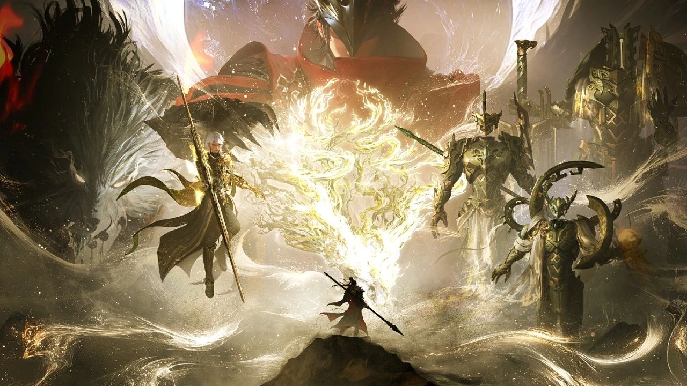
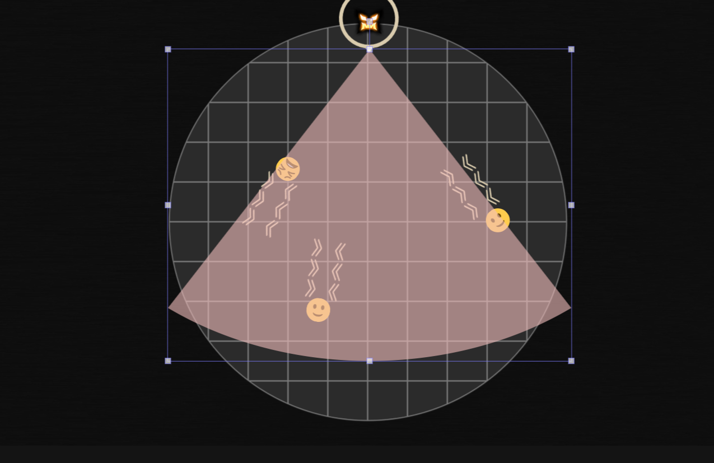

Enemy Design: Xueya, the Blood Emissary
Interned in Netease Thunderfire at Fall 2024. Designed Xueya, the final boss in the 2024.12 Version for "JUSTICE ONLINE", the largest local MMORPG in China.
The theme for the version is exploring ancient kingdom, and I am responsible for creating the final enemy, Xueya, in the team raid gameplay. He is a mastery swordsman from the evil faction "Bloodcult," intent on stopping players from delving deeper into the ancient kingdom.
In JUSTICE online, the final boss of team raid represents the highest difficulty challenge of current version, and its challenging nature needs to be emphasized in the battle design. As the commander of the enemy forces, Xueya also needs to fulfill a narrative role to enhance the story experience during the battle.

For this purpose, I designed "Blade Spirits" as the core of combat mechanics. Xueya summons different Blade Spirits during the fight, each with a unique style, providing a series of distinct combat experiences that can overlap with his basic skills.
Narratively, the Blade Spirits are depicted as old acquaintances of Xueya, with each representing a part of his past. I have utilized numerous in-battle voice-overs and skill effects in combination to create a more dimensional character portrayal.
Additionally, for the first time, I integrated auditory elements as a combat element into the game, creating a mechanism for identifying positions by sound.
In certain phase, I turn off the arena lighting and restrict players' vision around their own characters. Meanwhile, the boss will attack from random directions around the arena. Players need to face the boss to survive from the strike. Since their version is blocked, players must rely on auditory cues to find the location .
This design is intended to create a tense emotional atmosphere while demanding less operations from the players , thus moderating the overall high-input combat rhythm and introducing a new dimension of challenge.
Xueya received widespread acclaim from players, focusing on the mechanics being interesting and the difficulty level being reasonable.
Player-created guide